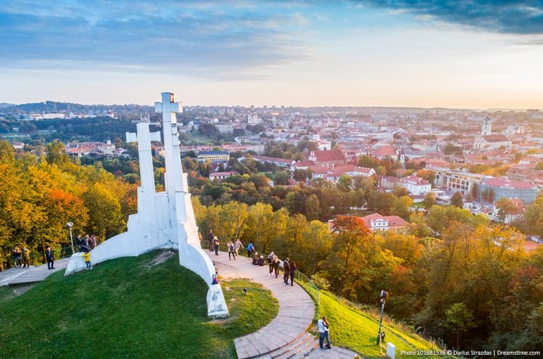
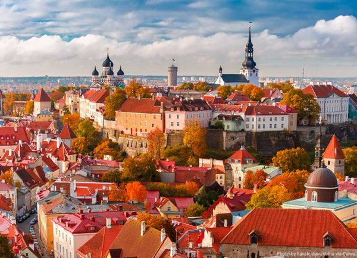
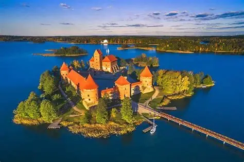

pictures of cool places in Lithuania



Lithuania fun facts
Lithuania is a very beautiful place as it has very
nice architecture in there citys. Citys such as
vilnus and kanus are very popoular with tourism as
thet have beatiful buildings like castles. The
economy is very stable and is not having troubles. Crime rate is very low in This
country as people ussaly treat one and another with respect.lithuania is a euroupean country
in the baltic region bordering belarus, poland and latvia.Lithuania is also know for its
climate as one day could be blazing hot and the next day could have the streets filled with thick snow